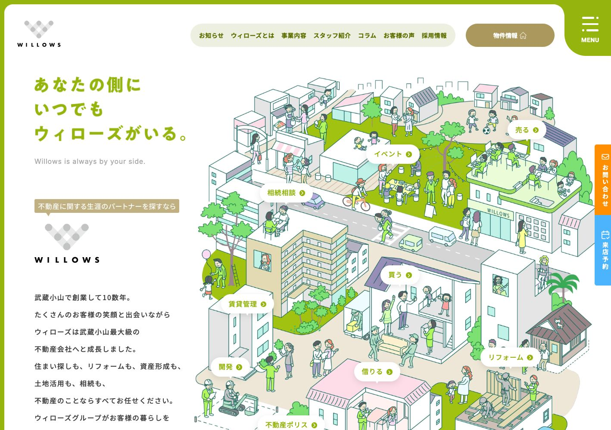
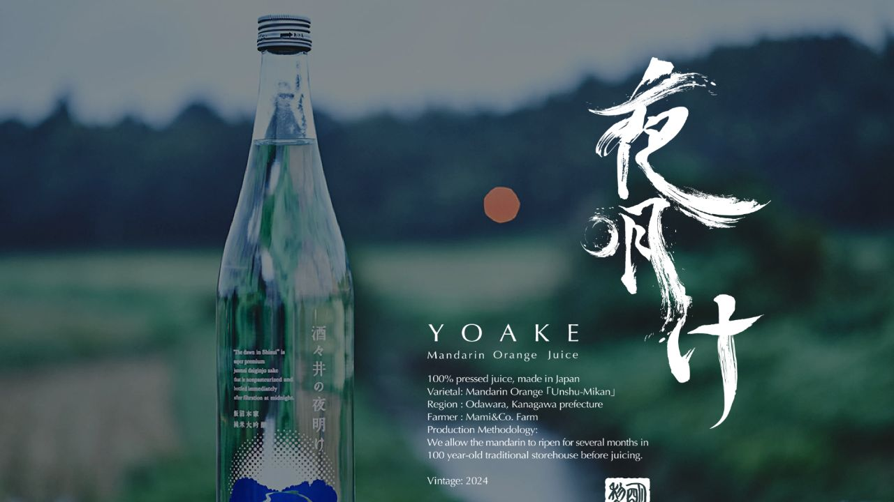
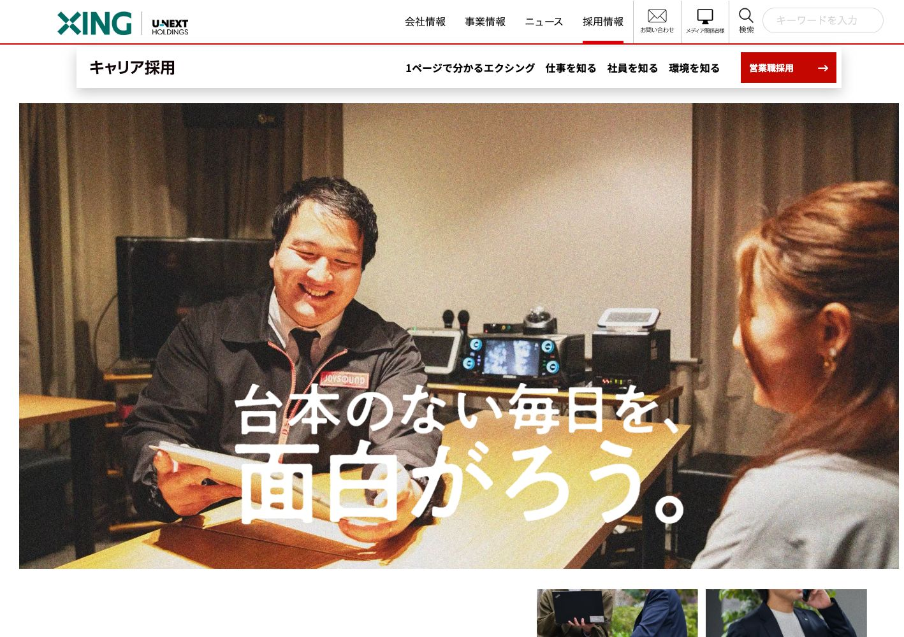
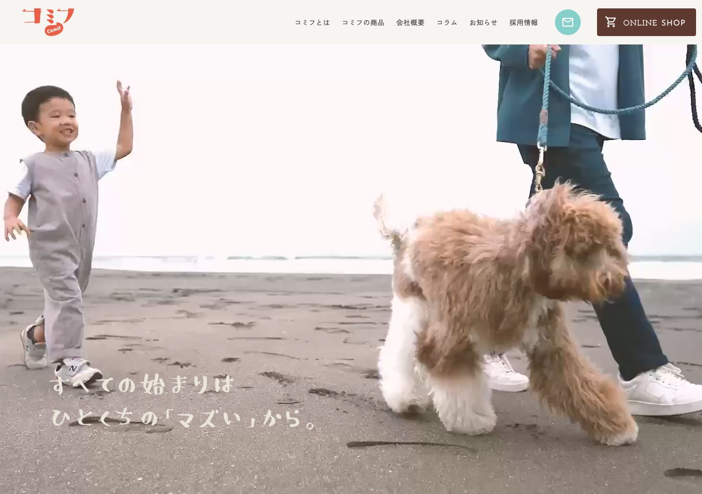
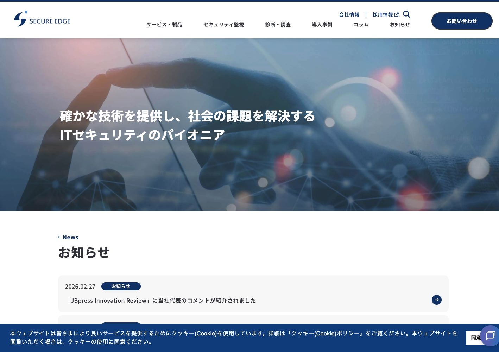
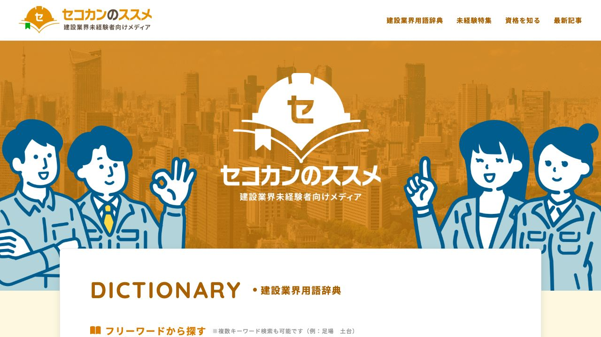
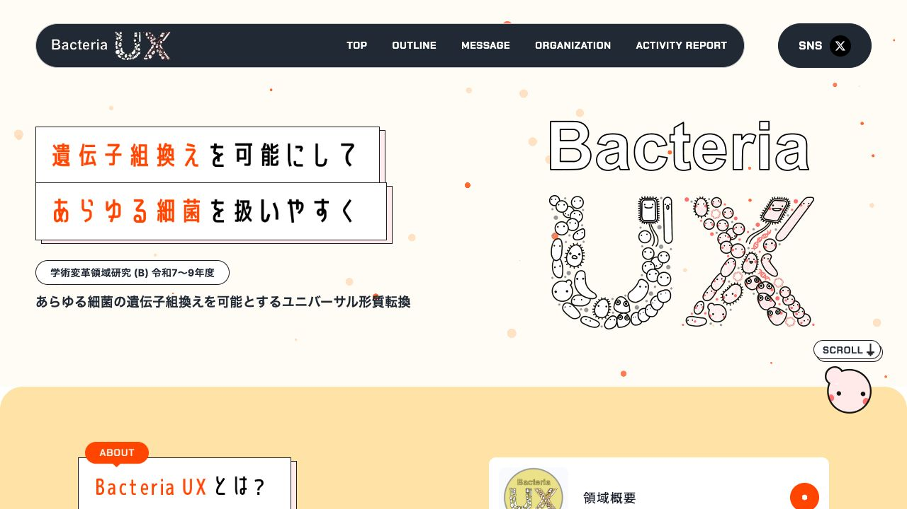

IDEAS INTO REALITY.
FROM DESIGN TO EXPERIENCE.
THOUGHTFUL CODE. POWERFUL EXPERIENCE.
Built with
intention.
Web制作・コーディング実績
これまでに100件以上のWeb制作に参画。
その中から、代表的な7件の実績をご紹介します。

VIEW WEBSITE ↗Willows ↗
株式会社ウィローズ
住まいと暮らしを支える、不動産会社のコーポレートサイト。
全ページのコーディング・WordPress実装
VIEW WEBSITE ↗YOAKE ↗
夜明け / ランディングページ
商品の世界観をビジュアルで伝えるランディングページ。

VIEW WEBSITE ↗XING ↗
株式会社エクシング / キャリア採用
JOYSOUNDを支える仕事と人を伝える、キャリア採用サイト。
全ページのコーディング・WordPress実装
VIEW WEBSITE ↗comif ↗
株式会社ホットドッグ / コミフ
愛犬と楽しむスイーツ＆デリ「コミフ」のブランドサイト。
全ページのコーディング・WordPress実装
VIEW WEBSITE ↗SecureEdge ↗
セキュアエッジ株式会社
セキュリティ製品とサービスを紹介するコーポレートサイト。
全ページのコーディング・WordPress実装
VIEW WEBSITE ↗セコカンのススメ ↗
株式会社メイジン
建設業界の用語や資格、施工管理の仕事を紹介するメディアサイト。

VIEW WEBSITE ↗Bacteria UX ↗
学術変革領域研究（B）
ユニバーサル形質転換の研究概要・研究体制・活動報告を紹介。
YEARS OF EXPERIENCE
Web制作の実務経験スピードを強みに、
実装から、
運用のしやすさまで。
Web制作の実務経験は5年。コーディングスピードを強みに、全ページのコーディングからWordPressの実装まで一貫して対応しています。
HTML・CSS・JavaScript・PHPは、それぞれ5年以上の実務経験があり、高度な実装にも対応可能です。見た目の再現だけでなく、更新する方にとって使いやすい管理画面づくりにも取り組んでいます。
CORE SKILLS実務経験 5年以上
ALSO WORKING WITH基本レベル / 実務1年程度
WordPress development
独自テーマの構築から、案件に合わせた機能の追加・管理画面の最適化まで対応します。
- WordPress独自テーマの構築・実装
- カスタム投稿・カスタムフィールドの実装
- クライアントに合わせた管理画面のカスタマイズ
- 必要に応じたプラグインの自作
使用経験のある主なプラグイン
Contact Form 7 / Custom Post Type UI / Advanced Custom Fields
次の制作を、
一緒に。
Webサイトのコーディング・実装のご相談はこちら。
c.ikeda@corvo-cro.com ↗クリックするとメールアプリが開きます。